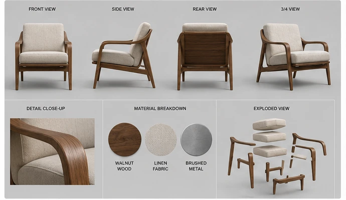
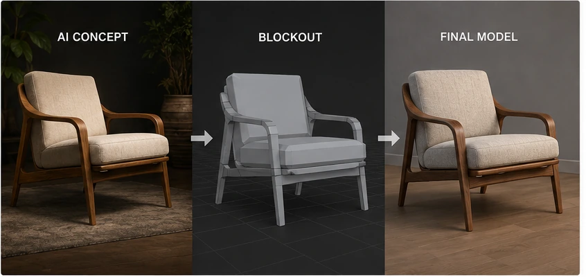

AI-generated concept art has become incredibly useful for exploring ideas quickly.
I can describe a piece of furniture, a room, a prop or an entire environment and get something visually interesting before I have opened 3ds Max. That makes it easier to test proportions, materials, lighting directions and overall design language without spending hours modeling every idea.
The problem begins when a beautiful concept image gets treated like an accurate blueprint.
It usually is not one.
A generated image can look completely believable while hiding impossible construction, mismatched perspective, inconsistent dimensions and details that change depending on where you look. The image may sell the idea perfectly while providing almost no reliable information about how the object actually works.
That does not make it useless.
It means the image needs to be interpreted rather than copied.
This is the workflow I use to turn AI concept art into practical 3D reference without letting the mistakes in the image become mistakes in the model.
Treat the image as design intent
The first thing I decide is what the concept image is actually telling me.
Usually, the most useful information is not a precise measurement or a tiny decorative detail. It is the larger design intent.
That might include:
- The overall silhouette - The visual weight of the object - The relationship between major forms - The material combination - The color palette - The mood of the lighting - The intended camera angle - The era or design style - The feature that makes the design recognizable
Those elements are often strong enough to guide a model.
The exact location of a seam, the number of supports under a table or the way two parts connect may be much less reliable.
I try to identify the three or four decisions that make the image worth modeling in the first place.
Everything else is negotiable.
A chair concept might have a great curved back, an unusual leg profile and a strong combination of wood and upholstery. Those are the ideas I want to preserve.
If the seat somehow floats three inches above the frame with no visible support, that is not a sacred part of the design. That is the AI politely asking me to solve the engineering problem.
Build a reference pack instead of relying on one image
One attractive three-quarter view is not enough reference for a complete model.
Before modeling, I try to create a small reference pack around the concept.
Current image-generation tools can generate new images, edit existing images and use image inputs as part of an iterative process. That makes it possible to ask for additional views or variations based on the original concept.
I might request:
- A straight front view - A side view - A rear view - A higher camera angle - A close-up of the construction - A simplified version with neutral lighting - A version without the background - A material breakdown - A rough exploded view
The important thing is that I do not assume those new views will agree with one another.
AI-generated turnarounds frequently redesign the object between views. A leg changes thickness. A cushion gains another seam. The rear construction suddenly becomes something completely different.
The additional images are still useful because they provide options.
I compare them and decide which solution makes the most sense for the final object.

Make the reference boring before you model from it
Dramatic concept art is excellent for selling an idea.
It is not always excellent for studying geometry.
Heavy depth of field, extreme perspective, fog, rim lighting and strong reflections can hide the actual shapes. Dark materials may blend into the background, and bright highlights can make a flat surface appear curved.
I often create or request a more boring version of the image before modeling.
That usually means:
- Neutral studio lighting - A plain background - Minimal depth of field - Reduced reflections - A longer camera lens - Clear separation between materials - No motion blur or atmospheric effects
The boring version may not look as impressive, but it exposes the design.
This is similar to turning off the beauty lighting in a 3D scene and checking the model with a plain gray material. Once the distractions disappear, the weak areas become much easier to see.
A dramatic render can convince your eye that everything works.
A neutral reference makes the geometry defend itself.
Establish one believable measurement
AI concept images rarely provide dependable scale.
Without at least one known dimension, it is easy to build something that looks correct in the viewport but feels strangely wrong when placed into a real environment.
I begin by choosing one believable measurement.
For furniture, that might be:
- Seat height - Overall table height - Mattress width - Counter height - Door height - Cushion thickness - Hardware diameter
Once that dimension is established, I use it to estimate the rest of the object.
Human scale is extremely useful here.
A lounge chair may look elegant in an isolated image, but if its seat is only twelve inches from the floor and the back is four feet wide, it may become less of a chair and more of an expensive wooden trap.
I also compare the concept against real products with a similar purpose.
I am not looking for something to copy. I am checking whether the proportions fall within a believable range.
A design can be unusual without ignoring basic ergonomics.
Separate silhouette, structure and surface detail
One of the easiest ways to overcomplicate a model is to treat every visible detail as equally important.
I break the concept into three levels.
The first level is the silhouette.
This includes the largest shapes and the outer profile. If the model is completely black against a white background, does it still resemble the concept?
The second level is the structure.
This includes the major parts and how they connect. For furniture, that might be the frame, legs, seat, back, arms and support system.
The third level is surface detail.
This includes seams, grooves, fasteners, wrinkles, stitching, bevels and material texture.
I work through those levels in order.
If the silhouette is wrong, detailed stitching will not rescue the model.
If the structure makes no sense, a beautiful material will only make the nonsense more expensive-looking.
Match the camera before judging the model
Sometimes the model is not wrong.
The camera is wrong.
AI images often use a camera position or field of view that is difficult to estimate by eye. A wide lens can exaggerate the front of an object, while a longer lens compresses depth and makes the design appear flatter.
3ds Max includes tools for using an image as a viewport background. Its Perspective Match utility can also use vanishing lines in the image to help orient a Free Camera and align the scene perspective with the reference.
This works best when the image contains clear horizontal and vertical lines.
Architecture, cabinetry, tables and other hard-surface objects are usually easier to match than soft organic shapes.
Even when I do not use Perspective Match directly, I spend time comparing:
- Horizon height - Vertical convergence - Field of view - Camera elevation - Distance from the object - Rotation of the object relative to the camera
I try not to reshape the model repeatedly until I have checked the camera.
Changing geometry to compensate for a bad camera match is a wonderful way to create a model that looks correct from one angle and bizarre from every other angle.
Block everything with simple primitives
My first version of the object is usually ugly.
That is intentional.
I begin with boxes, cylinders, planes and very simple splines. The goal is to solve proportion before topology.
At this stage, I want to answer basic questions:
- Is the object the correct height and width? - Do the major masses feel balanced? - Is the center of gravity believable? - Does the silhouette match? - Is there enough physical space for the parts to connect? - Does it work from more than one camera angle?
I avoid detailed bevels, support loops and complicated modifier stacks until the blockout feels right.
The blockout also makes contradictions in the concept easier to spot.
A shape that appeared elegant in the generated image might intersect another part once it exists in three dimensions. A support may need to move. A curved surface may require more thickness than the concept suggests.
That is not the model failing to match the reference.
That is the model revealing information the reference never contained.

Decide how the object is actually built
AI is very good at suggesting the appearance of construction.
It is less reliable at designing construction that would survive gravity, manufacturing or one enthusiastic person sitting on it.
Once the blockout works visually, I start asking practical questions.
For furniture, those questions might include:
- Where are the joints? - What supports the seat? - How are the legs attached? - Can the upholstery actually be installed? - Is there enough material around the hardware? - Could this shape be cut, bent, molded or machined? - Would the object tip over? - Are the thin areas strong enough?
The final model does not always need to be manufactured.
Still, believable construction improves the design.
Viewers may not consciously identify why an impossible object feels wrong. They simply feel that something is off.
Adding a logical support, seam or connection can make a fantasy design feel much more convincing without changing its overall appearance.
Watch for repeated AI mistakes
Certain problems appear often enough that I actively look for them.
Details that change direction
A groove may begin horizontally and quietly become vertical. Stitching may wander into a shape that could not be sewn. Wood grain may rotate halfway across the same board.
I decide on a clear direction and rebuild the detail consistently.
Parts that merge together
Two materials may blend into each other without a seam, gap or construction break.
In the model, I decide whether they are separate objects, a molded transition or simply a mistake to remove.
Uneven repetition
Buttons, slats, vents and panels may appear regularly spaced until the AI reaches an awkward corner and begins improvising.
I rebuild repeated elements with arrays, spacing tools or procedural methods.
Unsupported shapes
Floating shelves, impossible cantilevers and paper-thin structural parts are common.
I either add support or deliberately redesign the form as a stylized object.
Reflection disguised as geometry
A strong highlight may look like a bevel, groove or raised panel.
I compare multiple images and test the shape with neutral lighting before modeling it permanently.
Symmetry that is almost symmetrical
AI often creates an object that looks symmetrical at first glance but contains small differences from side to side.
Sometimes those differences are interesting.
Most of the time, they are visual static.
I choose whether the design is meant to be symmetrical and build it intentionally.
Do not model the lighting into the geometry
This one is easy to do.
A concept image may have a bright band along an edge, a dark area beneath a surface or a soft gradient across a panel. Those lighting effects can make the object appear to have more curvature than it really does.
Before adding geometry, I ask whether the shape would still exist under flat lighting.
A bright edge may simply need a small bevel.
A dark recess may be ambient occlusion rather than a deep groove.
A soft bulge may be a reflection from a large light source.
This is another reason to generate or create a neutral reference image.
It helps separate the object from the presentation of the object.
Use the concept to guide materials, not define them
AI-generated materials are often visually persuasive but physically vague.
The image may show something halfway between painted wood, ceramic and brushed plastic. Fabric may have the scale of carpet in one area and fine upholstery in another.
I translate the material into something I could actually build in a renderer.
Instead of trying to duplicate every pixel, I define:
- Base material type - Roughness range - Reflection strength - Surface scale - Grain direction - Edge behavior - Variation amount - Wear level
I also look at real material references.
If the concept suggests walnut, I study walnut. If it suggests boucle fabric, brushed aluminum or molded fiberglass, I find real examples and use those to guide the shader.
The AI image gives me the artistic direction.
Reality gives me the material behavior.
Keep a list of unresolved decisions
When a concept contains contradictions, I do not try to solve all of them inside my head.
I write them down.
A short uncertainty list might look like this:
- Rear leg connection is unclear - Arm thickness changes between views - Seat appears too thin for the cushion depth - Back panel needs a believable mounting method - Metal finish could be brushed aluminum or dark steel - Front view and side view disagree on width
That list becomes a design checklist.
As I model, I resolve each item deliberately instead of unconsciously choosing whatever is easiest in the moment.
This is especially helpful when working with a client or art director.
The questions can be discussed before the model becomes detailed and expensive to change.
Generate variations after the blockout exists
AI concept generation does not have to end when modeling begins.
Once I have a basic blockout, I can render it from the intended camera angle and use that render as an image input for further exploration.
At that point, the image generator is working from geometry that already has consistent proportion and perspective.
I might use it to explore:
- Different materials - Alternate colors - Upholstery patterns - Hardware finishes - Lighting directions - Environmental styling - Decorative details - Surface wear - Background concepts
This is where the workflow becomes much more controlled.
The 3D model handles structure, scale and camera consistency.
The image generator handles rapid visual variation.
Each tool is doing the part it is best at.
Where AI concept art is genuinely useful
Despite all the warnings in this article, I use AI concept images because they are extremely useful.
They are especially good for:
- Exploring many directions quickly - Breaking out of familiar design habits - Testing unusual material combinations - Establishing mood - Creating a visual starting point - Communicating rough ideas - Filling gaps in a reference board - Trying ideas that may not justify a full model yet
The mistake is not using AI concept art.
The mistake is expecting it to contain information it was never designed to provide.
A concept image can answer, “What could this feel like?”
It may not answer, “How wide is this part, how does it connect and what focal length created this view?”
Those answers still require an artist.
My practical workflow
My full process usually looks like this:
1. Generate or choose the strongest concept image. 2. Identify the silhouette, design language and major features worth preserving. 3. Create additional views and neutral-lighting variations. 4. Gather real-world references for scale, construction and materials. 5. Establish one reliable measurement. 6. Set up the primary reference as a viewport background. 7. Match the camera or approximate its perspective. 8. Build a simple blockout using primitives. 9. Check the design from multiple views. 10. Resolve impossible construction and conflicting details. 11. Refine the geometry. 12. Build physically believable materials using real references. 13. Render the blockout or model back into AI tools for controlled visual variations. 14. Make the final artistic decisions myself.
That last step matters.
AI can provide options at an absurd speed.
It cannot decide which option belongs in the project unless I give it that responsibility.
And I do not want to give it that responsibility.
The artist still has to solve the object
AI concept art has not removed the need for 3D artists.
It has changed the starting point.
Instead of beginning with a blank page, I can begin with several possible directions. That can save time, create unexpected ideas and make early exploration much more enjoyable.
But the image is still only the beginning.
Someone has to decide what the object is, how large it is, how it is constructed, how the camera sees it and which details are worth keeping.
Someone has to recognize when the image is lying.
That is where experience becomes more valuable, not less.
The best results come from treating AI as a fast concept partner and 3D as the system that turns the concept into something coherent.
Use the generated image for inspiration.
Use real reference for truth.
Use the model to make the two agree.
More practical AI and 3D workflow articles are available on the [JasonArts blog](https://www.jasonarts.com/blog).
Sources
OpenAI — Creating Images with ChatGPT: https://openai.com/academy/image-generation/
OpenAI — Image Generation API Guide: https://developers.openai.com/api/docs/guides/image-generation
Autodesk — 3ds Max Viewport Background Panel: https://help.autodesk.com/cloudhelp/2026/ENU/3DSMax-Customizing/files/GUID-D1419AE6-1CDE-44FC-8D46-E77F8F4DD2D0.htm
Autodesk — Perspective Match Utility: https://help.autodesk.com/cloudhelp/2024/ENU/3DSMax-Rendering/files/GUID-CA74469E-9320-4801-B3F0-B4E00461689C.htm